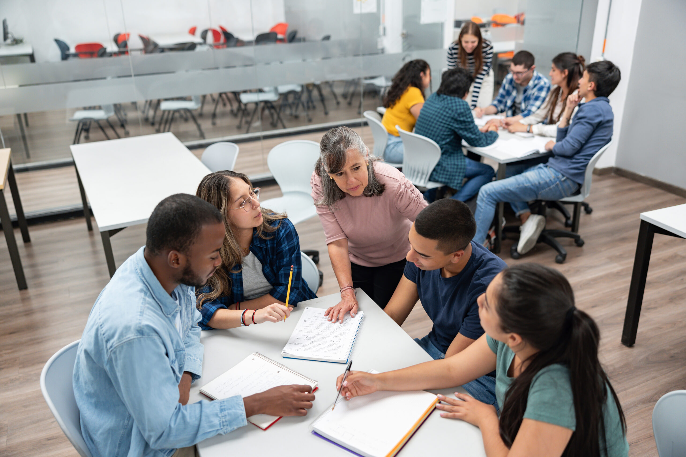
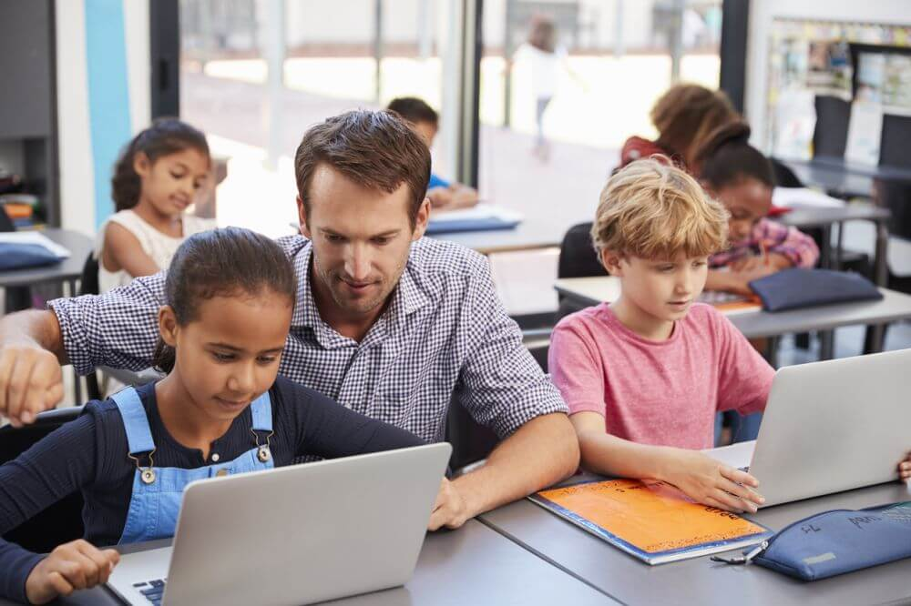
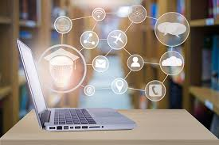

Online learning platforms allow students to attend classes from home, review recorded lessons, and submit assignments digitally. This makes studying more flexible, especially for students who live far from school.
Teachers also benefit from digital classrooms because they can use presentations, videos, and interactive quizzes. These tools make lessons more engaging and easier to understand.
However, online learning also requires discipline. Without proper time management, students may struggle to focus or finish tasks on time.
Conclusion:
Online classrooms have become an important part of modern education. When used responsibly, they help students become independent and motivated learners.
Technology and Student Creativity
Students can now create videos, digital art, presentations, and blogs to show their understanding of lessons. These creative outputs help improve confidence and communication skills.
Editing apps and design software allow learners to improve their work easily. They can revise, enhance, and share their projects online.
Collaboration also becomes easier. Group projects can be done through shared documents and virtual meetings.
Conclusion:
Technology encourages creativity and innovation. It helps students explore their talents and prepare for creative careers.

Digital Tools for Better Study Habits
Study apps allow students to make schedules, reminders, and to-do lists. These tools help manage time and reduce missed deadlines.
Online flashcards and learning apps also help in reviewing lessons. They make studying more interactive and enjoyable.
Cloud storage makes it easy to save files and access them anytime. Students no longer worry about losing important documents.
Conclusion:
With proper use, digital tools help students become more organized, focused, and productive learners.

Social Media and School Life
Students use social media to share school activities, announcements, and projects. It helps spread information quickly.
Group chats are often used for class discussions and reminders. This improves teamwork and cooperation.
However, too much social media use can cause distractions and stress. Students must learn how to balance online and offline life.
Conclusion:
Social media can be helpful when used wisely. Responsible use promotes healthy communication and focus.
Online Safety in Schools
Students often share personal information online without thinking of the risks. This may lead to privacy issues or cyberbullying.
Schools teach digital citizenship to help students behave responsibly online. This includes respecting others and protecting personal data.
Strong passwords and careful browsing help prevent online threats. Awareness is key to staying safe.
Conclusion:
By practicing online safety, students can enjoy technology without putting themselves at risk.

Preparing for the Future Through Technology
Many jobs today require computer skills, digital communication, and problem-solving abilities. Schools help students develop these skills early.
Coding, research, and multimedia projects train students to think critically and creatively.
Online courses and tutorials also allow learners to explore different career paths and interests.
Conclusion:
Using technology in school helps students become future-ready. It builds confidence and prepares them for lifelong learning.
.png)